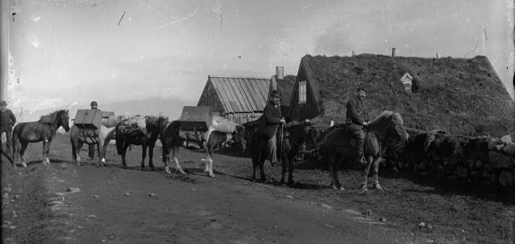
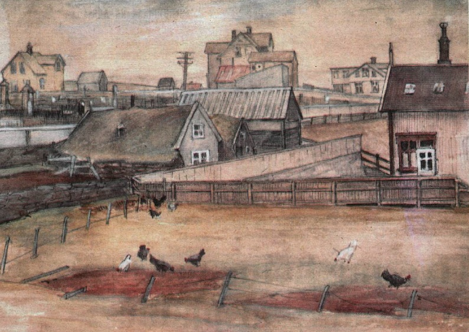

1769 – 1916
Ferðamenn við Melkot þar sem Suðurgata liggur nú. Melkot stóð austan megin við Suðurgötu, rétt aftan við ráðherrabústaðinn við Tjarnargötu. Melkotstúnið var þar fyrir neðan og náði niður að Tjörninni. Melkot var afbýli frá Melshúsum sem var ein af hjáleigum Reykjavíkurbæjarins. Ekki er vitað hvenær Melkot var fyrst byggt en tveir ábúendur voru þar árið 1769. Sama ættin bjó í Melkoti lengst af á 19. öld. Magnús Einarsson fæddist í Melkoti árið 1839 og varð ábúandi þar í fyllingu tímans. Reyndar hafði túnið þá verið tekið undan Melkoti og selt einum bæjarmanna án þess að ábúandanum væri gefinn kostur á að eignast grasnytina. Aðalatvinna Magnúsar varð því sjósókn.

Ferðamenn við Melkotum 1900

Mynd eftir Mugg af Melkoti1913
1913
Mynd eftir Mugg af Melkoti árið 1913. Gaflinn á Ráðherrabústaðnum sést hægra megin og kirkjugarðurinn við Suðurgötu vinstra megin. Hannes Hafstein reisti Ráðherrabústaðinn árið 1908 nánast á hlaðinu hjá Melkoti. Mun Magnúsi gamla ekki hafa líkað sambýlið vel. Haustið 1916 auglýsti hann eigur sínar á uppboði og skömmu síðar var Melkot jafnað við jörðu.
Í Brekkukotsannál segir: „Til þess að gera lánga sögu stutta, þá er þar til máls að taka að sunnanvið kirkjugarðinn í höfuðstaðnum okkar tilvonandi, þar sem brekkan fer að lækka við syðri tjarnarendann, alveg á blettinum þar sem hann Guðmundur Gúðmúnsen sonur hans Jóns Guðmundssonar í Gúðmúnsensbúð reisti loks veglegt hús, þar stóð einu sinni lítill torfbær með tveim burstum; og þilin tvö vissu suðrað tjörninni. Þessi litli bær hét í Brekkukoti."